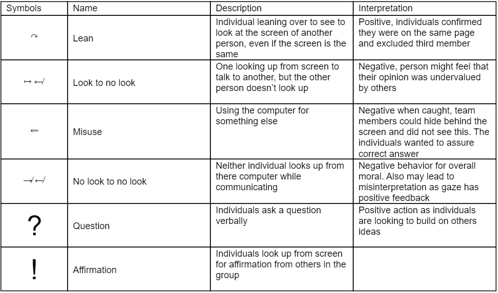

Our Focus
Our objective was to understand and explore how a laptop could form a physical barrier to team discussion and distract team members from paying attention to each other. Specifically, we wanted to see whether team members felt less engaged in conversation if someone was multitasking with an electronic device like a laptop or smartphone to chat with others or to surf the Internet.
Preliminary Observations
On March 8, we observed students and professors at Duffield Hall and saw different communication patterns exchanged between them.
- Most students individually worked on their computers without looking at others.
- Students multitasked between working with their team members on their laptops and typing out messages to their friends on their phones.

Brainstorming Session
Each of us met up the next day to discuss how we could create an expressive robot to solve this disconnect between students and authority figures.
- How can we make people sit in different spots in a lecture hall?
- How is the laptop a physical barrier to group communication?
- How can we increase communication between different members in a team? I.e. leader, programmer, designer, business strategist?
- Are students intimidated by professors in a lecture hall? Is it a social norm to listen?
Afterwards we brainstormed a number of ideas ranging from creating a robot that mimics the class atmosphere for the professor and wearables to keep students focused in lecture.
Teamwork Task to Measure Individual and Group Distractedness
We created a task to focus on how individuals get distracted in a group. At the start, one of us sent all individuals a link to Flockdraw, an online drawing collaboration platform. We told three team members that they had 10-15 minutes to solve two visual brain puzzles together. They could use the online chat or talk to each other in person as well as draw out their ideas. When they finish one problem, they should all agree on the answer before typing it out in the chat box.
Experimental Setup
At 6:00pm, we recruited three of our friends to participate in a social experiment at Duffield Hall. None of them had met each other before. One of our participants was a business student, while the others were engineers. At the start, we had each of them sit at an empty table, open up their laptops to an email with two questions and Flockdraw, and start discussing the problem. Two of our team members video-recorded their interactions from two different angles for ten minutes.
Analysis and Coding Scheme
All of our participants engaged in channel blending where they alternated between different electronics like a calculator, smartphone, and the Flockdraw interface to solve the problems. They mainly used the calculator in their smartphone to calculate values for the first question and the Flockdraw interface to draw out their ideas. They rarely used the online chat interface, but preferred to speak their thoughts out loud. Interestingly, the two engineers talked the majority of the time. They seemed to understand how to solve the problem, but the business student felt left out and her opinion undervalued because she did not understand what was going on.
Design Project II videos
Alex
Lucy
Yu Meng
Janani
Pehuen
Team members
 Alex - as898@cornell.edu
Alex - as898@cornell.edu Lucy - lh486@cornell.edu
Lucy - lh486@cornell.edu Janani - ju48@cornell.edu
Janani - ju48@cornell.edu Kate - ykz2@cornell.edu
Kate - ykz2@cornell.edu Pehuen - ppm44@cornell.edu
Pehuen - ppm44@cornell.edu